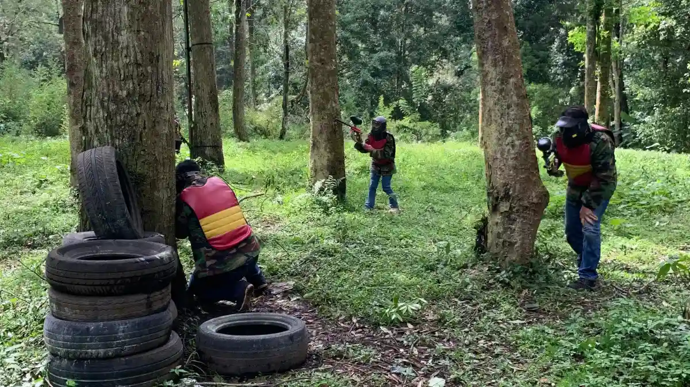

1. Apa Itu Vendor Outbound Perusahaan?
Vendor Outbound adalah penyedia layanan kegiatan outbound yang berfokus pada pengembangan sumber daya manusia melalui aktivitas kreatif dan inovatif. Dalam memilih vendor outbound perusahaan, aspek yang perlu diperhatikan meliputi kesesuaian program dengan tujuan kegiatan, keselamatan peserta, kemampuan menyesuaikan aktivitas, kejelasan rundown, fasilitas, komunikasi, serta transparansi penawaran.
Bagi Direktur dan HR Manager, menyelenggarakan kegiatan luar ruang skala perusahaan melibatkan banyak aspek operasional, mulai dari pemilihan venue, logistik perlengkapan, penyusunan skenario simulasi, hingga penanganan mitigasi risiko. Kehadiran partner vendor yang berpengalaman memungkinkan manajemen untuk fokus pada substansi acara tanpa terbebani oleh kendala teknis di lapangan.

Membangun Sinergi Tim Tanpa Jenuh: 5 Permainan Outbound Kreatif & Kolaboratif
Ulasan ragam simulasi luar ruang yang dirancang untuk melatih koordinasi dan komunikasi aktif dalam suasana ceria.
2. Mengapa Perusahaan Membutuhkan Vendor Outbound?
Mengadakan kegiatan outbound secara mandiri tanpa dukungan tim fasilitator profesional kerap kali menghadapi berbagai kendala, seperti alur acara yang kurang teratur, permainan yang tidak terhubung dengan nilai kerja, atau kurangnya kesiapan penanganan keselamatan.
Bekerja sama dengan partner profesional memberikan berbagai keuntungan nyata:
- Perencanaan Terstruktur: Skenario acara dirancang rapi dengan alokasi waktu yang seimbang.
- Modul Program Berbasis Kebutuhan: Aktivitas disusun untuk menjawab kebutuhan spesifik tim (komunikasi, leadership, atau trust building).
- Fasilitasi Dinamika Kelompok: Game master dan fasilitator memandu jalannya interaksi dan sesi refleksi secara objektif.
- Manajemen Keselamatan: Standar penanganan risiko dan kesiapsiagaan darurat diterapkan di setiap pos kegiatan.
- Optimalisasi Pengalaman Peserta: Karyawan mendapatkan pengalaman kebersamaan yang berkesan dan bermakna.

Kegiatan luar ruang di kawasan asri pegunungan memberikan suasana baru bagi karyawan untuk berinteraksi secara cair.
3. 10 Kriteria Memilih Vendor Outbound yang Profesional
Agar proses pengadaan kegiatan memberikan hasil yang sepadan dengan investasi perusahaan, pertimbangkan 10 kriteria evaluasi berikut:
- Kejelasan Program: Memiliki deskripsi modul simulasi dan alur pembelajaran yang terperinci.
- Kesesuaian dengan Tujuan: Mampu menyelaraskan jenis aktivitas dengan sasaran pengembangan tim dari klien.
- Safety Management: Memiliki standar operasional prosedur keselamatan dan perlengkapan P3K yang memadai.
- Kualitas Fasilitator: Didukung tim fasilitator yang komunikatif, ramah, dan mampu memandu sesi debriefing.
- Rundown yang Realistis: Jadwal acara memperhitungkan jeda istirahat dan kondisi fisik peserta.
- Fleksibilitas Program: Bersedia menyesuaikan skenario jika terjadi perubahan cuaca atau kebutuhan mendadak.
- Kelengkapan Fasilitas: Menjelaskan dengan transparan apa saja fasilitas yang termasuk dalam penawaran.
- Transparansi Penawaran: Rincian biaya tertera jelas tanpa adanya biaya tersembunyi.
- Komunikasi & Responsivitas: Tim vendor responsif dalam memberikan informasi dan menjawab pertanyaan.
- Evaluasi Pasca-Kegiatan: Menyediakan dokumentasi dan rangkuman dinamika kelompok setelah acara selesai.

Kenapa Team Building Kantor Sering Gagal? Ini 3 Kesalahan HRD
Ketahui kesalahan umum dalam perencanaan team building dan cara merancang kegiatan yang benar-benar berdampak.
4. Pilihan Program Outbound Perusahaan
Vendor Outbound menyediakan ragam pilihan paket outbound perusahaan yang dapat disesuaikan dengan sasaran kegiatan instansi Anda:
- Team Building Perusahaan: Simulasi dinamika kelompok bertingkat yang berfokus pada penguatan kerja sama, resolusi konflik, dan pencapaian target bersama.
- Fun Games Perusahaan: Aktivitas luar ruang ringan dan ceria untuk mencairkan suasana (*ice breaking*) dan membangun keakraban santai.
- Leadership Camp: Pelatihan terfokus untuk mengasah kemampuan manajerial, pendelegasian, dan pengambilan keputusan di bawah tekanan.
- Corporate Gathering: Paket terpadu perayaan hari jadi perusahaan, gathering akbar, atau employee day dengan kombinasi games dan hiburan.
5. Kebutuhan Kegiatan Outbound di Kawasan Batu & Malang
Kawasan Kota Batu dan Malang merupakan salah satu destinasi terpopuler untuk penyelenggaraan outbound perusahaan di Jawa Timur. Udara pegunungan yang sejuk, ketersediaan area terbuka hijau yang luas, serta aksesibilitas akomodasi hotel dan villa menjadikan wilayah ini sangat ideal untuk kegiatan penyegaran tim.
Dalam merancang kegiatan di kawasan Batu dan Malang, vendor profesional akan mempertimbangkan faktor suhu udara, perkiraan cuaca lokal, serta pemilihan lokasi yang representatif bagi kenyamanan seluruh rombongan.
6. Jangkauan Area Layanan Vendor Outbound di Jawa Timur
Selain kawasan Batu dan Malang, Vendor Outbound melayani kebutuhan kegiatan outbound untuk perusahaan dan instansi pada berbagai area di Jawa Timur berdasarkan kebutuhan dan konfirmasi klien:
- Batu & Malang: Area pegunungan, kebun wisata, dan resort outdoor.
- Mojokerto & Trawas / Pacet: Kawasan perbukitan dengan suasana alam terbuka yang asri.
- Banyuwangi: Destinasi petualangan alam terbuka dan rekreasi pesisir.
- Wilayah Jawa Timur Lainnya: Lokasi lain dapat dikonsultasikan dan disesuaikan berdasarkan rencana agenda kegiatan perusahaan.

Paket Outbound Perusahaan & Team Building
Lihat pilihan paket lengkap mulai dari Half Day, Full Day, hingga paket menginap 2 Hari 1 Malam untuk instansi Anda.
7. Checklist HR Manager Sebelum Menentukan Vendor Outbound
Pastikan Anda memeriksa poin-poin berikut sebelum memutuskan kerja sama dengan penyedia outbound:
- Apakah proposal penawaran mencantumkan rincian modul permainan dan rundown acara secara spesifik?
- Apakah rasio jumlah fasilitator sebanding dengan total peserta kegiatan?
- Apakah ada perlindungan keselamatan dasar dan kesiapan penanganan medis di lokasi?
- Apakah vendor memiliki fleksibilitas dalam menyesuaikan menu konsumsi atau jadwal sesuai kebutuhan internal?
- Apakah mekanisme pembayaran dan syarat pembatalan tertera secara transparan?
8. 8 Pertanyaan Kritis yang Wajib Diajukan kepada Vendor
Gunakan daftar pertanyaan ini saat berdiskusi dengan perwakilan vendor:
- Apa tujuan utama dan pembelajaran yang didapat dari modul simulasi yang ditawarkan?
- Apa saja jenis aktivitas fisik yang akan dilakukan peserta?
- Berapa jumlah peserta ideal untuk skenario permainan yang diusulkan?
- Bagaimana sistem manajemen keselamatan dan mitigasi risiko yang disiapkan?
- Apa saja fasilitas yang sudah termasuk dan yang belum termasuk dalam biaya penawaran?
- Bagaimana susunan rundown dari awal hingga penutupan kegiatan?
- Apakah modul program dapat disesuaikan jika tim memiliki kebutuhan khusus?
- Apa saja rincian komponen biaya yang tertera dalam proposal penawaran?
9. Tentang Layanan Vendor Outbound
Vendor Outbound adalah penyedia layanan kegiatan luar ruang yang berfokus pada pengembangan sumber daya manusia melalui program-program yang kreatif, inovatif, dan berkesan. Kami memfasilitasi kebutuhan korporasi, instansi pemerintah, institusi pendidikan, hingga komunitas keluarga dengan rancangan kegiatan yang mengutamakan nilai kerja sama tim, kepemimpinan adaptif, komunikasi efektif, pemecahan masalah, dan keterlibatan positif seluruh peserta.
10. Matriks Kriteria Penilaian Vendor Outbound
Tabel berikut merangkum aspek evaluasi yang perlu diperiksa serta risiko yang dapat timbul jika kriteria tersebut diabaikan:
| Kriteria Penilaian | Yang Perlu Diperiksa | Risiko Jika Diabaikan |
|---|---|---|
| Tujuan Program | Kesesuaian aktivitas dengan kebutuhan perusahaan | Program tidak memiliki arah pembelajaran yang jelas |
| Program | Jenis aktivitas, modul games, dan kejelasan rundown | Peserta kurang memahami alur dan tujuan kegiatan |
| Safety | Pengelolaan risiko aktivitas dan kesiapan medis | Risiko keselamatan peserta di lapangan meningkat |
| Fasilitator | Kejelasan briefing dan koordinasi lapangan | Aktivitas berjalan kurang terarah dan kaku |
| Fleksibilitas | Kemampuan menyesuaikan program dengan dinamika tim | Program kurang relevan dengan kondisi riil peserta |
| Fasilitas | Detail fasilitas pendukung yang termasuk dalam paket | Potensi ketidakjelasan biaya tambahan di luar paket |
| Penawaran | Rincian komponen biaya dan transparansi proposal | Sulit melakukan perbandingan anggaran pengadaan |
| Komunikasi | Responsivitas dan koordinasi tim vendor | Persiapan teknis kegiatan dapat terganggu |
Dapatkan Konsultasi Kebutuhan Paket Outbound Perusahaan Anda
Dapatkan konsultasi kebutuhan paket outbound perusahaan di Batu, Malang, dan area Jawa Timur melalui WhatsApp Vendor Outbound di +62 82211221909. Sampaikan jumlah peserta, tujuan kegiatan, tanggal, dan konsep acara yang diinginkan. Kami siap mengirimkan proposal penawaran, rundown acara, dan estimasi biaya dalam 1x24 jam.
Hubungi Kami via WhatsAppKesimpulan
Poin Kunci Memilih Vendor Outbound
Memilih partner vendor outbound yang tepat memberikan ketenangan bagi manajemen bahwa seluruh aspek keselamatan, profesionalitas fasilitasi, dan tujuan acara tercapai dengan optimal.
- Pastikan vendor memiliki transparansi penawaran dan fasilitator yang kompeten.
- Pilih lokasi pelaksanaan yang representatif dan nyaman bagi seluruh rombongan perusahaan.
- Konsultasikan kebutuhan kustomisasi modul sejak tahap awal perencanaan agar alur kegiatan berjalan lancar.
Pertanyaan yang Sering Diajukan (FAQ)

Arby Ardiansyah
Praktisi pengembangan SDM dan perancang program experiential learning dengan pengalaman lebih dari 8 tahun memfasilitasi ratusan kegiatan outbound korporat, BUMN, dan institusi pendidikan di seluruh Jawa Timur.